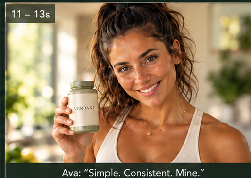

Simple habits. Brighter days.
VERDANT is framed as an everyday wellness ritual led by Ava, with the tone staying optimistic, natural and uncomplicated.
The visual language uses daylight, greenery, soft neutrals and a clean product presentation to make the routine feel approachable and premium.
From morning ritual to product hero.
The six supporting references establish Ava, the product interaction, the wellness action and the final branded finish.




Wellness with a lighter touch.
The campaign avoids a clinical presentation and instead makes the product part of an attractive, believable daily routine.
Natural environment
Daylight, plants and warm neutral styling create a fresh botanical world.
Hero-led dialogue
Ava speaks directly to the viewer, turning the supplement into a personal habit.
Clean finish
The final product frame gives the campaign a clear branded resolution.
Designed for repeatable wellness content.
Workflow first. Attribution second.
The portfolio records the creative workflow without inventing model attribution. Exact tools can be named once confirmed against the production process.
A scalable format for wellness brands.
VERDANT demonstrates how one Hero Ava can carry a complete short-form commercial through direct address, ritual, lifestyle and product presentation.
The structure is suited to social advertising, paid media, product launches and campaign variations.